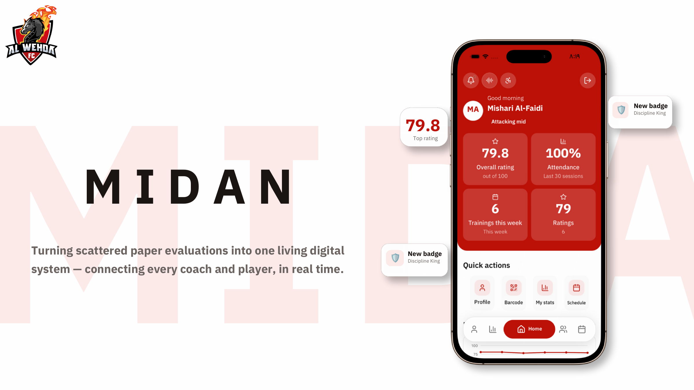
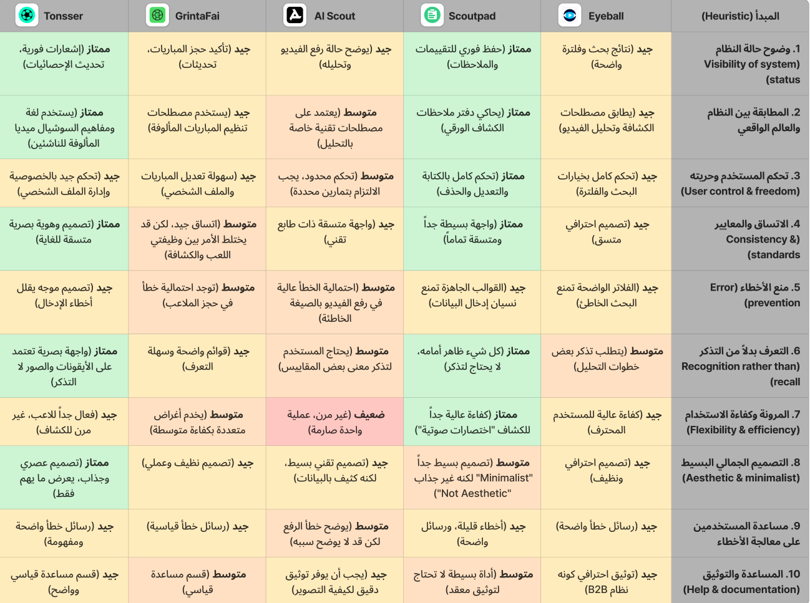
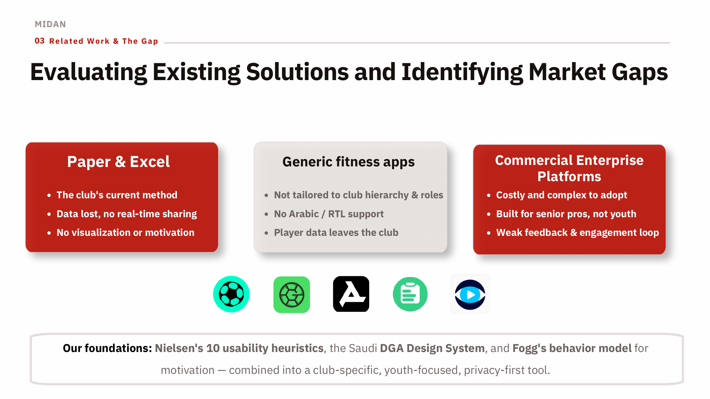
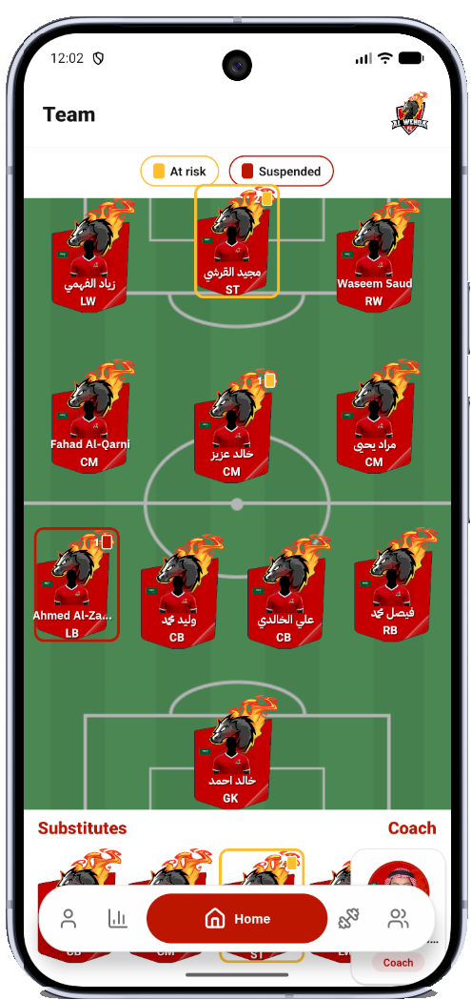
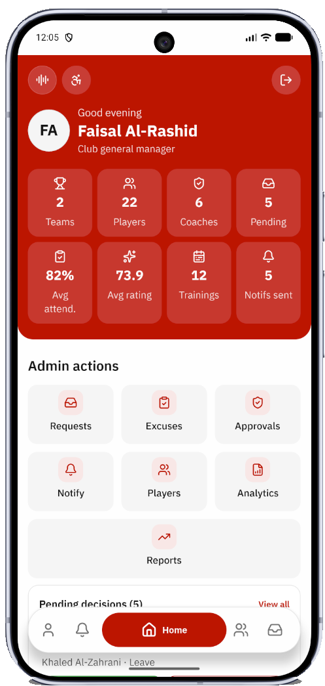
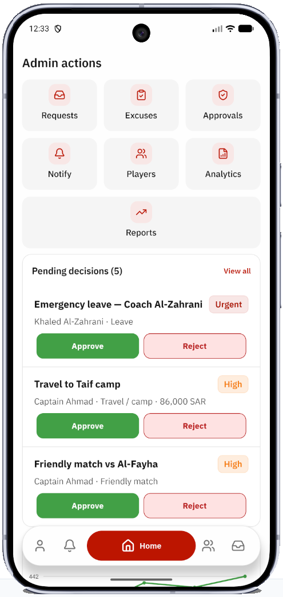
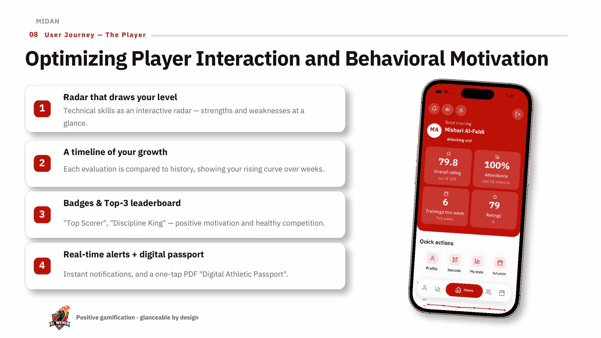
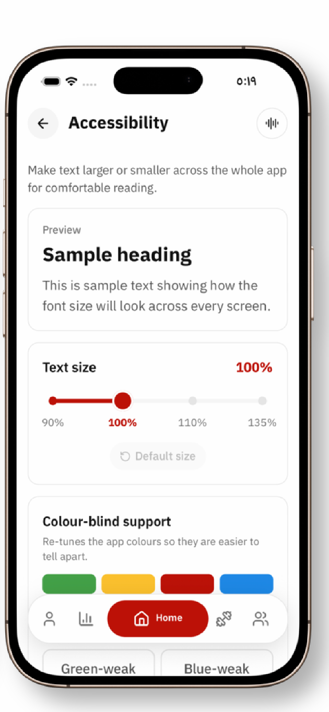

The Admin
Manages the ecosystem
A strategic-oversight dashboard: club-wide analytics, coach-to-team assignments, a dedicated decision portal for approving camps and requests, income-versus-expenses monitoring, and a centralized notification hub.
Case Study — Digital Sports Talent Management System
Turning scattered paper evaluations into one living digital system for Al Wehda Club — connecting administration, coaches, and youth players in real time.

01 — Executive Summary
Al Wehda Club's youth academy ran on paper, spreadsheets, and coaches' memory. Our field research quantified the cost: half of coaches had lost player data, 70% of the club's information lived scattered across unofficial files, and evaluating a single player consumed twenty minutes of manual entry. Players trained without ever seeing their own level.
As part of a six-person HCI team — and in direct collaboration with the club's technical director — I helped design and validate Midan: a single cross-platform ecosystem that unites administration, coaches, and youth players around one trustworthy source of truth. Every role gets an interface tuned to its job — rapid slider evaluations pitch-side for coaches, a motivational progress dashboard for players, and strategic oversight for administrators — grounded in Nielsen's usability heuristics, the Saudi DGA design system, and Fogg's behavior model.
Business value in one line: Midan turns the youth academy into a measurable, data-driven institutional asset — protecting the club's data, its time, and the market value of its talent.
02 — The Problem
Talent development is a chain of decisions — who to train, who to field, who to promote. At the club, every link in that chain depended on paper forms and personal judgment. Research with coaches and players surfaced three compounding failures:
03 — Research & the Gap
Before designing, we mapped every existing route the club could take — and scored the leading products against Nielsen's ten usability heuristics, evaluating five talent platforms (Eyeball, Scoutpad, AI Scout, GrintaFai, and Tonsser) heuristic by heuristic.
The benchmark revealed a consistent pattern: strong single-purpose tools, none of them right for a Saudi youth academy.
The market gap was precise: a club-specific, youth-focused, Arabic-first, privacy-first tool. Our design foundations followed directly: Nielsen's heuristics for usability, the Saudi DGA Design System for structure familiar to Saudi users, and Fogg's behavior model for sustained motivation.

The competitive heuristic matrix: five platforms evaluated against Nielsen's ten heuristics.

The three existing routes — and why each fails a Saudi youth academy.
04 — The Solution
Midan is a single cross-platform application governed by role-based access control: everyone reads from the same living record, but each role sees a purpose-built lens over it. Slider evaluations, skill radars, digital passports, real-time alerts, and badges — each feature lands in the journey of the role that needs it.
The Admin
A strategic-oversight dashboard: club-wide analytics, coach-to-team assignments, a dedicated decision portal for approving camps and requests, income-versus-expenses monitoring, and a centralized notification hub.
The Coach
Pitch-side speed: swipe-driven lineup building, rapid slider evaluations that update a player's skill radar instantly, QR-based attendance with smart excuse handling, and voice notes transcribed to text — all working offline with a local cache.
The Youth Player (15–18)
A radar that draws their level, a timeline of growth across weeks, badges and a Top-3 leaderboard for healthy competition, instant alerts on new evaluations, and a one-tap PDF “Digital Athletic Passport”.
Design value, demonstrated. In the platform's decision-support scenario, weekly analytics flag a sudden drop in a player's training efficiency; the team screen simultaneously flags a pre-existing yellow card on the right winger; the skill radar exposes a tactical misalignment (dribbling 8.0, defense 2.5). The coach benches the at-risk player and shifts formation — one screen, one decision, no paperwork. Unifying performance metrics, the card system, and skill radars in one place prevents numerical disadvantages on the field.



05 — Design Decisions
Behavioral design (Fogg's B = MAP). Motivation is built through visible progress — the rising growth curve, badges like “Discipline King”, and the Top-3 leaderboard. Ability is raised by collapsing effort: 1–100 sliders replace twenty minutes of forms, QR check-ins replace roll calls, swipes replace taps for lineups. Prompts arrive as real-time push notifications the moment an evaluation lands. The three converge exactly where the target behavior happens.
Visibility of system status, everywhere. Every core action answers back instantly — a toast confirms “Report Sent Successfully”, a submitted evaluation redraws the radar in real time. Deep tasks navigate to dedicated pages while modals are reserved strictly for quick confirmations, keeping visual clutter and disorientation low. On an unreliable pitch-side connection, evaluations save to a local cache and sync when the network returns.
A hybrid design system. The visual identity draws directly from Al Wehda FC's crest — the club's red as the primary interactive color — while structure, spacing, and typography follow the Saudi DGA digital-government design system, giving Saudi users an interface that feels instantly familiar. Arabic-first and RTL-native throughout.
Inclusivity as a feature, not a pass. A dedicated in-app accessibility screen lets any user scale text from 90% to 135% with a live preview across every screen, and a colour-blind support mode re-tunes the palette for green-weak and blue-weak vision — essential in an app where red dominates the brand. Users span teenage players to veteran administrators; the interface assumes nothing about digital literacy.


06 — Validation & Outcome
Validated with the club itself. We tested the prototype with real coaches and players at Al Wehda Club, coordinated through the club's technical director, and exhibited it at the college showcase for expert critique. Users confirmed the core premise — the app solves a real problem by putting scattered information in one place — and their feedback directly reshaped the design: tap-to-pick lineups became swipe-driven, low-contrast early palettes were corrected, and two user-suggested features — coaches' voice notes and a Top-3 leaderboard — were designed into the system.
From prototype to product. The validated designs were implemented as a cross-platform React Native application on a Clean Architecture foundation, with real-time synchronization and role-based access control — then hardened with a self-hosted local server, so the academy's history and its players' data stay securely with the club, forever.
Institutional return. Midan reframes the academy digitally the way the club views it institutionally — as an investment: digital development records raise young players' future transfer value, proactive suspension alerts prevent costly forfeits and fines, and slider-based evaluation with bulk attendance drastically reduces daily reporting time. The roadmap extends the platform to all age groups and other sports, layers in human-in-the-loop AI insights, and connects smartwatch data for physical-load tracking.
Next case study
Khatib & Alami — Corporate Website Redesign →